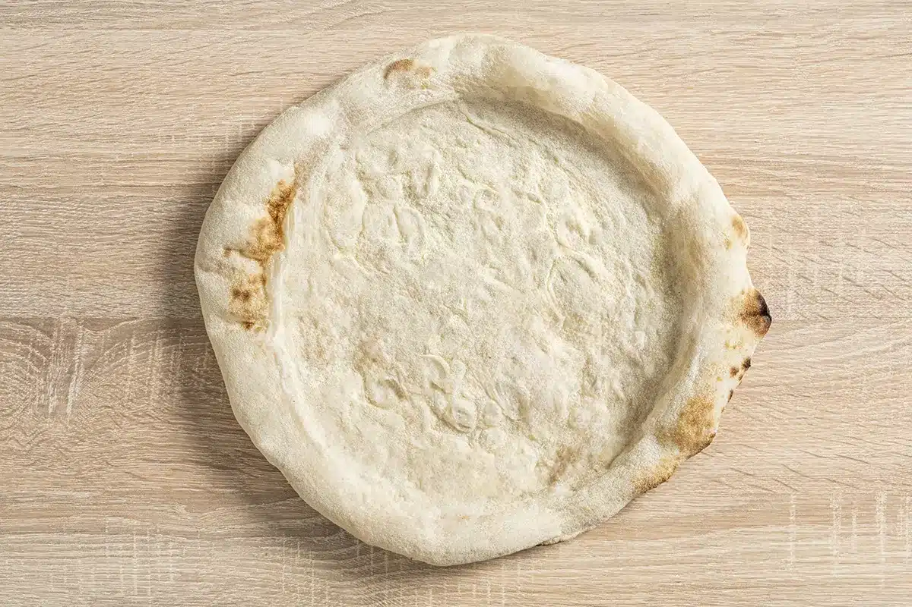

Base de Pizza Casera
Una receta sencilla para hacer una base de pizza casera, perfecta para personalizar con tus ingredientes favoritos. ¡Disfruta de una pizza recién hecha en casa!
Ingredientes
- 500 g de harina de trigo
- 10 g de sal
- 7 g de levadura seca
- 300 ml de agua tibia
- 2 cucharadas de aceite de oliva
- 1 cucharadita de azúcar
- Un poco de semolina (opcional, para espolvorear)

Instrucciones
- Preparar la levadura: En un bol pequeño, mezcla el agua tibia, el azúcar y la levadura. Deja reposar durante 5 minutos hasta que la levadura se active.
- Mezclar los ingredientes secos: En un bol grande, mezcla la harina con la sal.
- Formar la masa: Añade la mezcla de levadura y el aceite de oliva a la harina. Mezcla hasta obtener una masa homogénea.
- Amasar: Coloca la masa sobre una superficie limpia y amasa durante unos 10 minutos, hasta que esté suave y elástica.
- Reposar: Coloca la masa en un bol engrasado, cúbrela con un paño y deja reposar en un lugar cálido durante 1 hora o hasta que haya duplicado su tamaño.
- Formar la base: Una vez la masa haya reposado, divídela en porciones y estírala con las manos o un rodillo para formar la base de pizza.
Consejos
- Para una base más crujiente, espolvorea semolina sobre la superficie antes de hornear.
- Deja que la masa repose más tiempo para un sabor más intenso.
¡Listo para poner tus ingredientes favoritos y hornear! Disfruta de tu pizza casera.